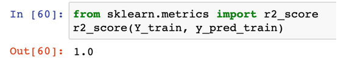
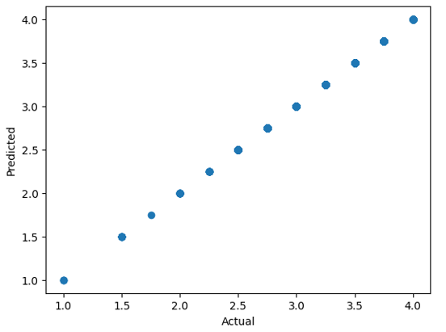

Codemonkers on Chocolate Puzzle in brief
AIM : To find which chocolate is better
Solution : We can create an artificially intelligent model which can take decisions based on data using a regression technique
DATA CLEANSING AND FEATURE ENGINEERING

TECHNIQUE USED: DECISION TREE
Decision tree is a supervised learning model which is used when we have to create stages. At every stage the dataset is being split according to the feature selection.

Accuracy achieved using r2Score method is 100%

Training Set: 80% of dataset Test Set: 20% of dataset
